中禅寺湖
| 日付 | 2006年10月28日（土） |
|---|---|
| 山域 | 日光周辺 |
| メンバー | 単独 |
| 山行形態 | 日帰り |
| アクセス | 電車、バス |
| ルート (Map) | 二荒山神社前→華厳の滝→中禅寺→阿世潟→竜頭滝 |
先週のリベンジ。中禅寺湖へ行く。
始発電車でも間に合わない可能性があるので、宇都宮で前泊して日光入り。
道も比較的すいていて、無事中禅寺湖へ。
中禅寺湖到着。二荒山神社前。
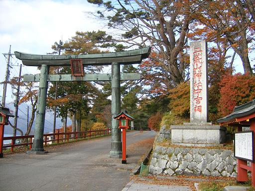
二荒山神社。
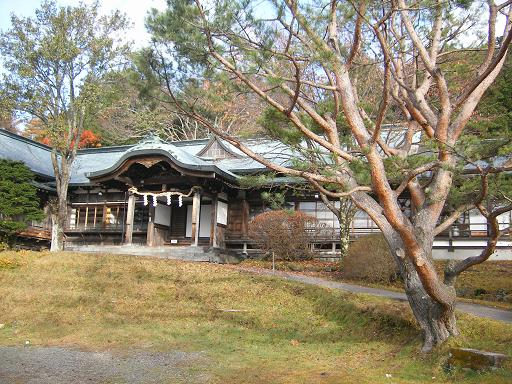
葉は鮮やかに色づいている。
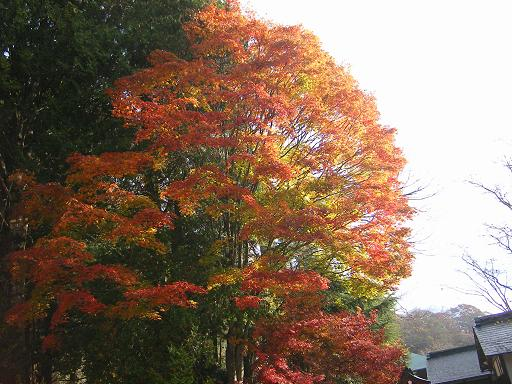
中禅寺湖の風景。今日は非常に天気が良い。
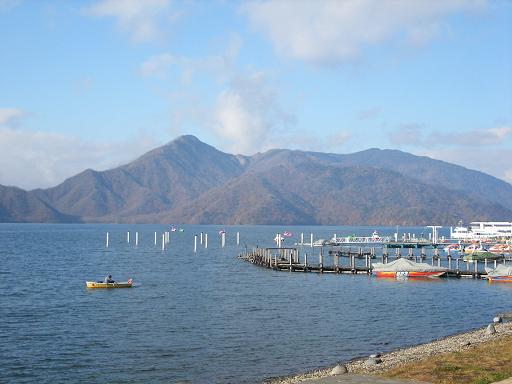
男体山。非常に形の整ったきれいな山。
登って上から湖を眺めるのもよかったが、残念ながら3日前に閉山されていた。
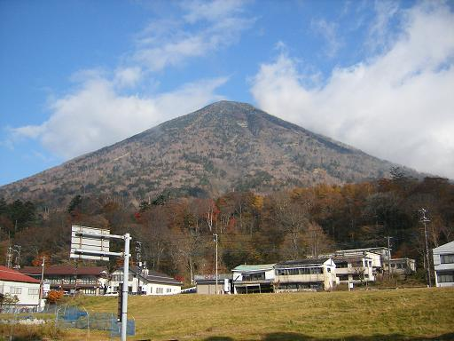
華厳の滝。修学旅行生がいっぱい。
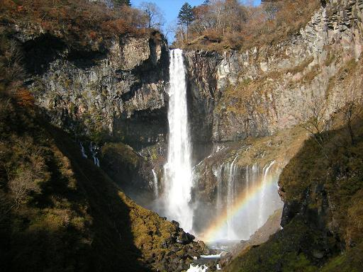
日光中禅寺へ行く。
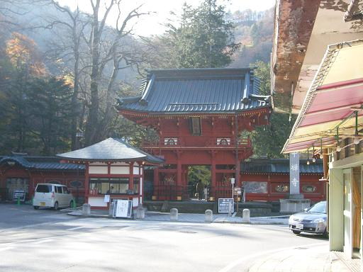
中禅寺内。本堂には、十一面千手観音がまつられている。
立木の状態で彫られたので、立木観音と呼ばれているらしい。
一見の価値あり（撮影禁止）。
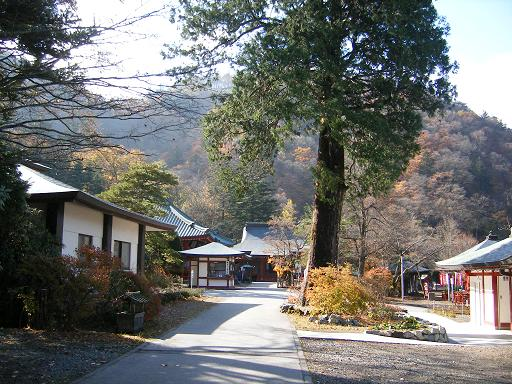
中禅寺から湖を眺める。
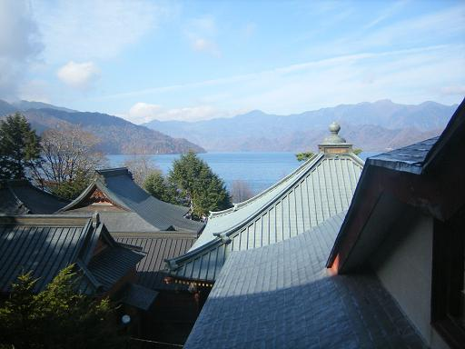
真っ赤に染まったもみじ。
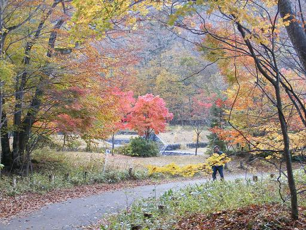
中禅寺湖のほとりにある、イタリア大使館別荘跡。
このあたりには、各国の大使館別荘がある。
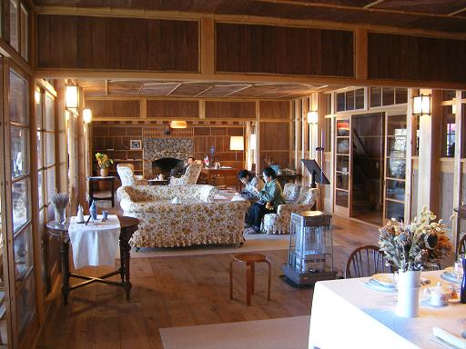
大使館付近から眺める中禅寺湖。
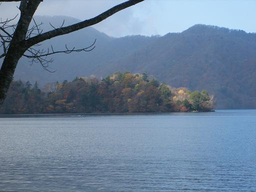
湖を左回りで歩く。だんだん人が少なくなっていく。
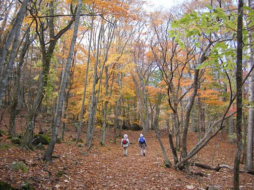
湖にうかぶ上野島。
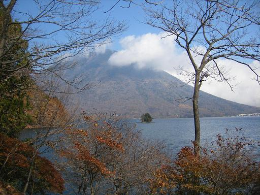
湖のほとりを上から眺める。ここまでくると、周りに歩いている人は誰もいない。
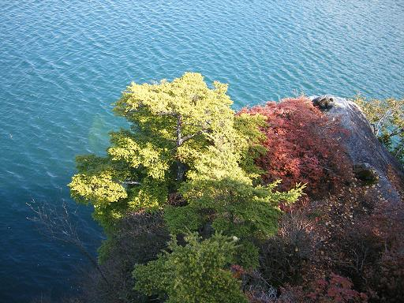
こちらの方向から見ると、男体山はどっしりとしているように見える。
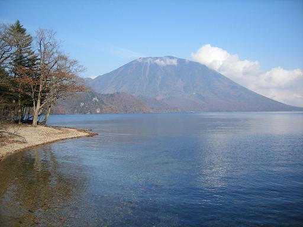
鮮やかな赤。中禅寺湖畔はもみじが多い。
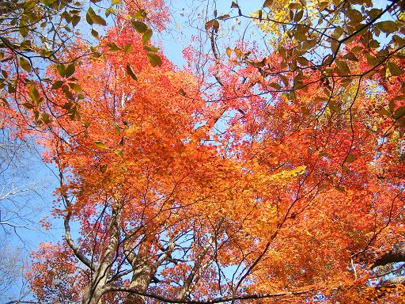
あまり鮮やかではないが、色づいている。
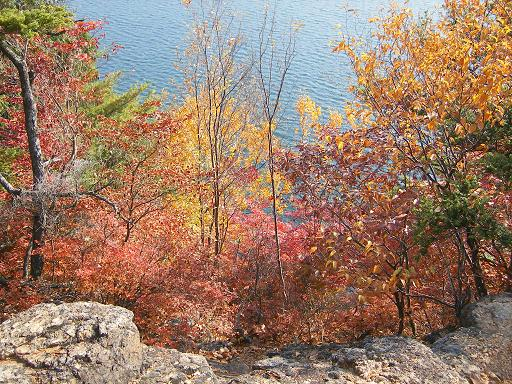
少し日も傾いてきた。
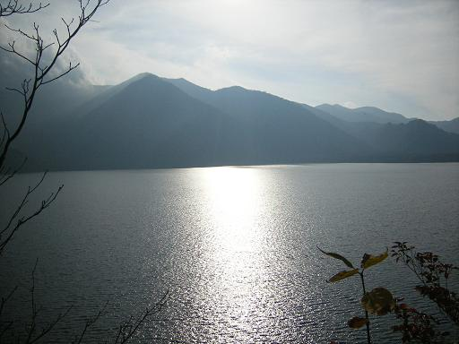
竜頭の滝に到着。ここまでくればバスがある。
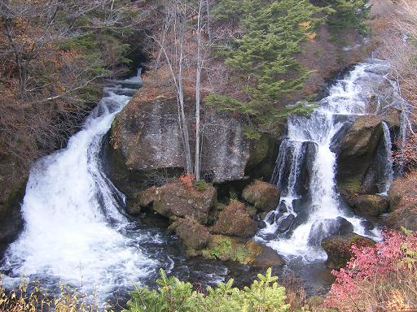
日光駅に到着。道は大混雑で、行き50分の道に3時間かかる。
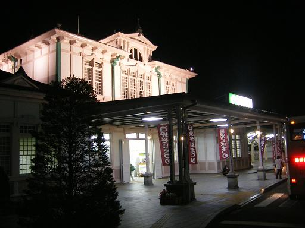